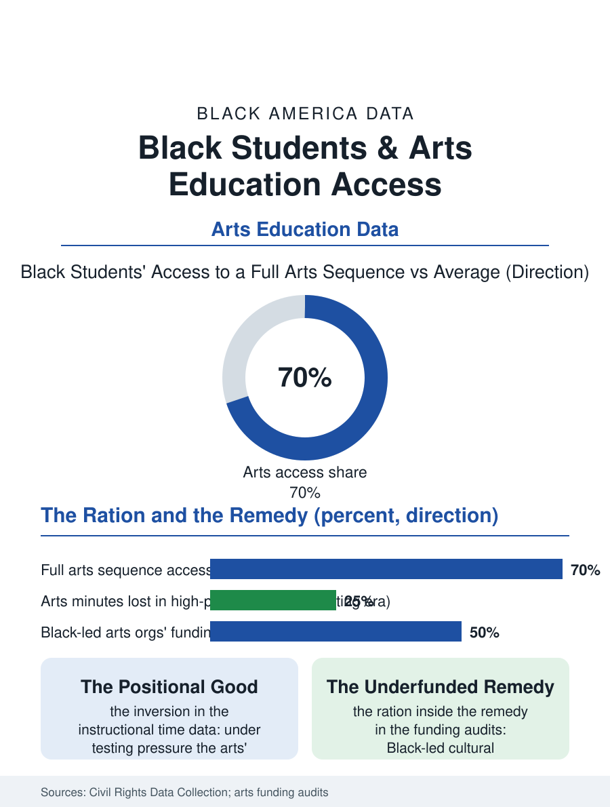

Black Education
The Shadow Faculty: Black Students and Arts Education
The arts are rationed by the funding gradient and then supplied by a shadow faculty that is itself underfunded at fractions per participant. The arts file.

Arts education beyond music, the visual arts, theater beyond the drama file's stage, dance, and media arts, follows the same distribution as every enrichment in the education files: rationed by district wealth, cut first in the contractions, and supplied in the Black community's case substantially by the cultural sector itself, the museums, the dance companies, and the community arts centers whose education programs are the system's shadow faculty. This article reads the arts access file.
The Enrichment Ration
The federal data collection counts the offerings: the arts specialist positions, the dedicated art rooms and their budgets, the field trip and artist residency line items, distribute across schools by the funding file's familiar gradient, so that the Black student's probability of attending a school with a full arts sequence runs well below the national figure, and the contraction cycles widen the gap first at the elementary level, where the classroom teacher absorbs the arts into the tested subjects' margins, the drawing as the reward for the finished worksheet. The accountability era's data make the ration explicit: the survey records of instructional time show the arts' minutes falling in the high-poverty schools under the testing regimes while holding in the affluent ones, the enrichment becoming, in the file's own terms, a positional good of the advantaged school, the exact inversion of the compensatory logic the funding formulas claim. The magnet and choice files interrupt the distribution partially, the arts magnets of the magnet file enrolling the city's selected young artists, Black students among them at shares the audition and portfolio gates decide, their portfolios themselves a product of the access being rationed, the private lesson and the stocked art table upstream of the magnet's door.
The Shadow Faculty
The community's cultural institutions carry the file's second system, as the music file's church does: the Black museums and cultural centers run education departments whose school programs reach the district's students in the tens of thousands in the major metros, the dance companies of the Alvin Ailey tradition maintain schools whose scholarship rolls are the city's young Black dancers' ladder, and the community arts centers, the settlement house descendants and the storefront studios, supply the neighborhood tier. The funding of the shadow faculty is the arts economy's own, the philanthropy and the public arts councils' grants, whose distribution the equity audits of the arts funding file examine with the same lens as the schools', finding the Black-led organizations funded at fractions of their white-led peers' budgets per participant, the ration reproduced inside the remedy. The teaching artist workforce that staffs the shadow system is the arts file's employment tier, its members the working artists of the creative files, its economics the gig's, and its pedagogy, in the evaluations, the equal of the certified tier's for the engagement outcomes the programs target.
Creativity's Ledger
The arts file closes on the claims made for it, which the file sorts with care: the transfer claims, arts study raising the tested scores, are the weakest in the evaluation literature, while the engagement claims, the arts as the school's hold on the student the tested subjects are losing, and the cultural claims, the student's own tradition placed at the center of the curriculum as knowledge rather than decoration, stand on the firmer ground of the participation and persistence data. For the Black student the cultural claim is the file's center: the arts curriculum is the one place the school can teach the student's inheritance as mastery, the quilt and the mural and the choreography as disciplines with canons and techniques, and the rationing of that place is therefore not an enrichment cut but a curricular one, the removal of the subject in which the community's knowledge is the text. The data collection counts the specialists and the minutes. The file's last entry is the art room's equivalent of the band room's light: the kiln and the canvas in the schools that fund them, and in the schools that do not, the shadow faculty's storefront two blocks away, where the lesson continues at the culture's own expense, as it has since the first settlement house hung the children's drawings in a neighborhood the school's budget had already left.
More in Black Education
Black Educational Attainment: High School Parity, the College Gap
About 89 percent of Black adults hold a high school diploma and one in four holds a bachelor's degree or higher — the attainment ladder, the college completion gap, and the generational trend.
Historically Black Colleges and Universities: Enrollment and Degrees
More than 100 HBCUs enroll roughly 290,000 students and award about one in six Black bachelor's degrees — an outsized share from a small sector. The federal education data.
Black College Enrollment: 2.4 Million Students
About 2.4 million Black students are enrolled in American colleges — nearly two-thirds of them women. The NCES enrollment data by sector, level, and trend.
Source: U.S. Department of Education, Civil Rights Data Collection; National Endowment for the Arts and arts funding equity audits.